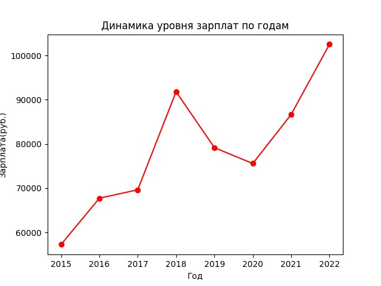
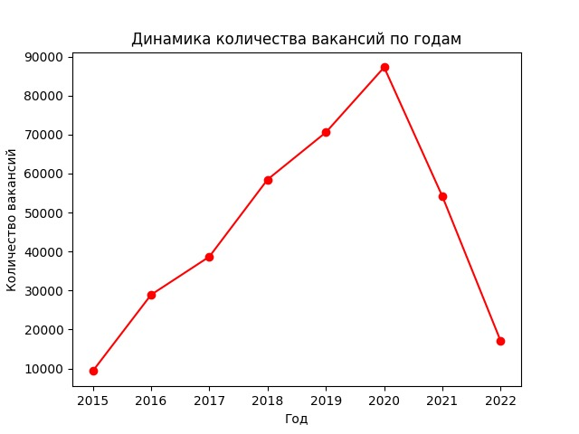
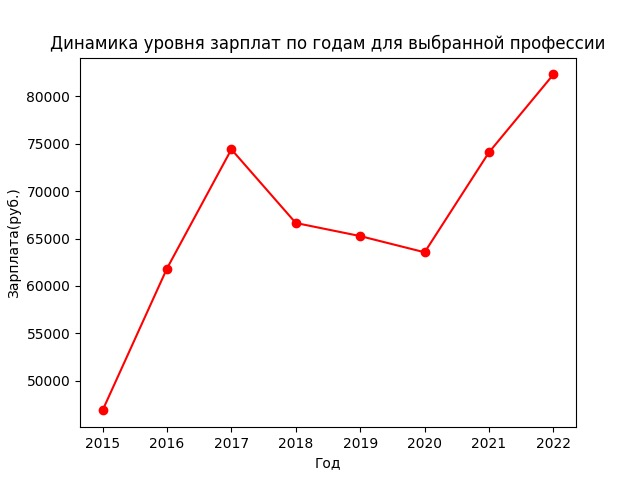
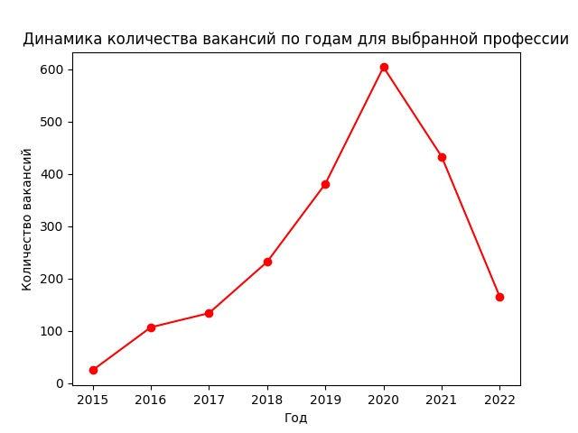

Статистические данные* по профессии "Специалист по информационной безопасности"
-
Динамика уровня зарплат по годам
| Год |
Зарплата(руб.) |
| 2015 | 57259 |
| 2016 | 67729 |
| 2017 | 69632 |
| 2018 | 91804 |
| 2019 | 79153 |
| 2020 | 75569 |
| 2021 | 86650 |
| 2022 | 102513 |

-
Динамика количества вакансий по годам
| Год |
Количество вакансий |
| 2015 | 9358 |
| 2016 | 28916 |
| 2017 | 38682 |
| 2018 | 58478 |
| 2019 | 70559 |
| 2020 | 87249 |
| 2021 | 54116 |
| 2022 | 17030 |

-
Динамика уровня зарплат по годам для выбранной профессии
| Год |
Зарплата(руб.) |
| 2015 | 46870 |
| 2016 | 61845 |
| 2017 | 74423 |
| 2018 | 66649 |
| 2019 | 65266 |
| 2020 | 63556 |
| 2021 | 74116 |
| 2022 | 82330 |

-
Динамика количества вакансий по годам для выбранной профессии
| Год |
Количество вакансий |
| 2015 | 25 |
| 2016 | 107 |
| 2017 | 134 |
| 2018 | 232 |
| 2019 | 381 |
| 2020 | 604 |
| 2021 | 433 |
| 2022 | 165 |

*Данные взяты с сайта hh.ru